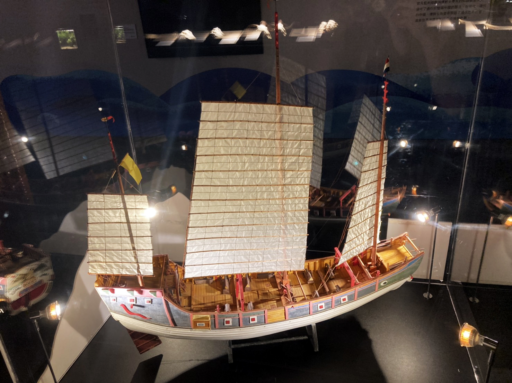
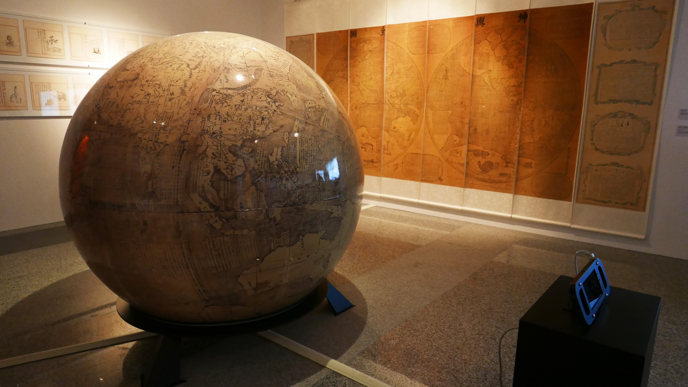

隨著繪製工具、地理量測（半球投影製圖學、地球天體學說等）技術的不斷提升，歐洲在15-17世紀產出大量的地圖，催生了地理大發現（或稱大航海時代）。人類對地球前所未有的了解，掀起了一陣探索未知海域與傳說陸塊的風潮。幾乎同一個時期，地球另一端國勢鼎盛的大明王朝亦積極的探索西洋（當時指南洋與印度洋一帶），七次派遣鄭和艦隊出航。源於東西方的不同文明基於貿易、資源獲取、政治等因素，皆開始走出國門、航向大海，也帶動了科學與技術的發展、促成熱絡的文化交流。
清康熙南懷仁所繪的《坤輿全圖》(西元1674年)，就是在中西知識交流以及政治考量的背景下繪製而成，在故宮典藏中具有特別意義。故宮以此圖為基礎，設計了「南懷仁的坤輿世界」AR互動裝置，配合展出當時人們做的動物觀察筆記《坤輿圖說》，並由海科館提供相關聯的動物標本。讓觀眾透過AR遨遊１７世紀人類認知的世界，發現古人對未知動物天馬行空的想像並與動物的真實樣貌並陳對比。地圖的繪製技術日趨成熟，也幫助了航海活動發展，清嘉慶皇帝開始(19世紀)有一種古帆船一度叱吒中國東南沿海，他是同安船。在本展區您可以藉由認識同安船的外觀構造以及其使用的歷史背景，遙想當年這艘政府軍、海盜、民生皆用的中式古帆船如何在中國以及台灣的海洋發展史中展有一席之地。
-


同安船模型
- 模型製作：曾樹銘老師
- 長101公分，寬24公分，高 100公分
- 原寸比例 1:30
同安船是清中葉興起的新型海船，不但廣為民間使用，也被海盜利用，最後更成為外海水師的主力，是輪船出現前，最具代表性的中國古帆船之一。故宮院藏〈集字號大同安梭船圖〉和〈一號同安梭船圖〉是同安船的重要圖像史料，其描繪的主體不但是同安船中船體最大，火力最強的一、二級戰船；同時，由於此圖對同安船之形制與彩繪十分細緻，兼有其它奏摺史料配合說明，是故宮極為特殊的海洋史藏品。故宮提供同安船歷史數據後，由資深船模工藝技師曾樹銘先生協助打造同安船模型。
-
 -
南懷仁的坤輿世界
「南懷仁的坤輿世界」，運用現今擴增實境技術，重現古人認識的地球與各地特有的動物，大家可以運用手機程式環繞著眼前地球，看看手機螢幕會出現什麼動物？和現代人的理解究竟有何異同？讓我們拿起手機，一起來環球找動物，寰宇大探險！
-
文物取材:
清 南懷仁 《坤輿全圖》
- 康熙十三年（1674）刊
- 縱171公分，橫52公分 （共8幅）
《坤輿全圖》完成於1674年，是耶穌會教士南懷仁（Ferdinand Verbiest 1623-1688）向康熙皇帝解說當時西方世界地理知識的工具。在本地圖中，南懷仁為迎合當時中國士大夫以中國為本位的世界觀，特意將本初子午線定在北京。《坤輿全圖》係由八長幅拼接而成，是中國地理學史上現存唯一的東、西半球圖，介紹了十六、十七世紀西方天文地理的理論與概念，包含地圓說、世界無中心、雨雲、潮汐、地震等知識。
地圖空白處畫有歐洲的船舶和數十種奇異的海陸生物，如惡那西豹（長頸鹿）、加默良（變色龍）、般第狗（河狸）、 把勒亞（鯨魚）⋯等等，成功地滿足時人的好奇心。


-

坤輿圖說
- 清 南懷仁《坤輿圖說》卷下
- 《文淵閣四庫全書》本
- 康熙十三年（1674）刊
《坤輿圖說》是南懷仁為《坤輿全圖》撰寫的說明小冊，上卷《坤輿》至《人物》，下卷載海外諸國道裏、山川、民風、物產，分為五大州，而終之以《西洋七奇圖說》。
在下卷收錄的圖說中，有23種動物圖像並有簡短的文字說明。本次特展中，海科館找到部分圖說提及的動物標本展出，觀眾可以在欣賞南懷仁《坤輿全圖》時搭配圖說解釋以及生物標本。
-